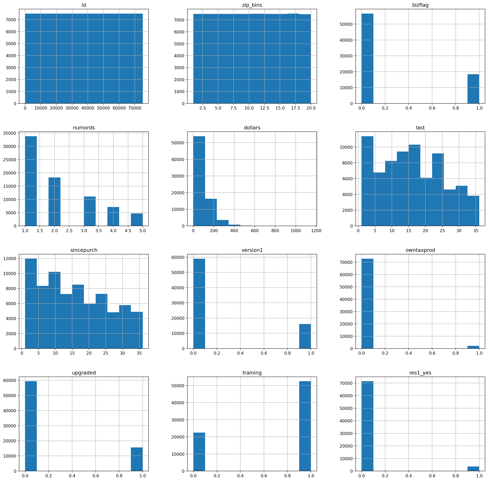
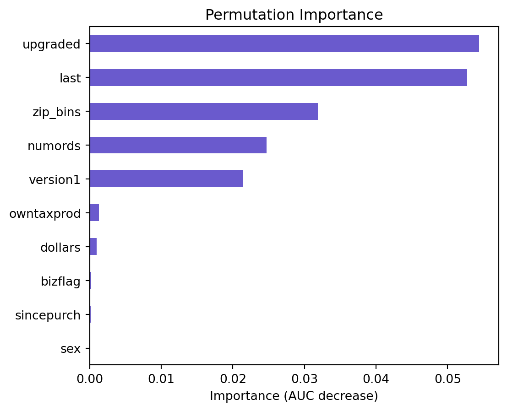
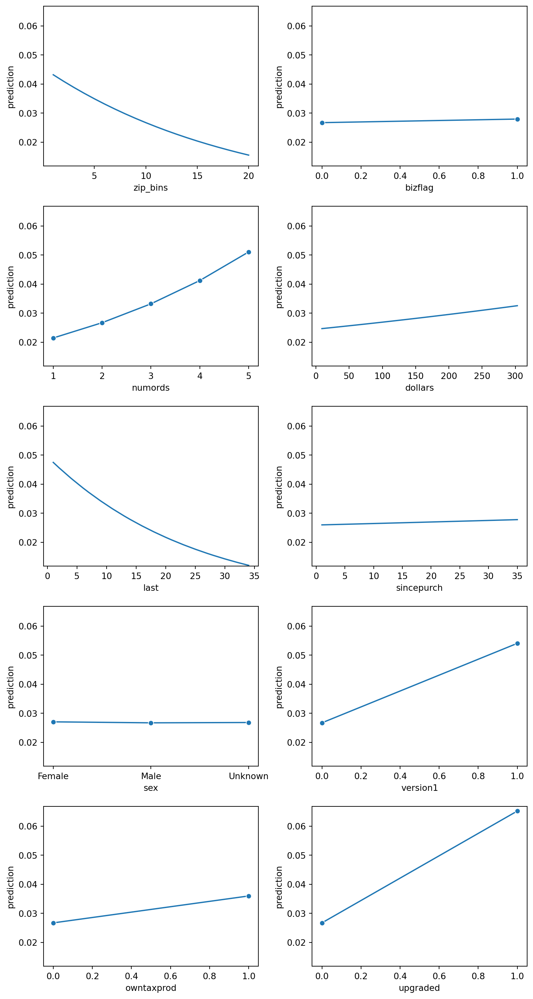
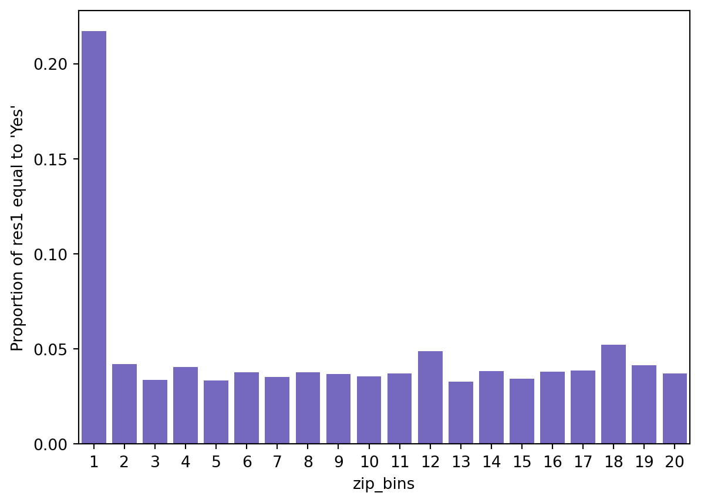
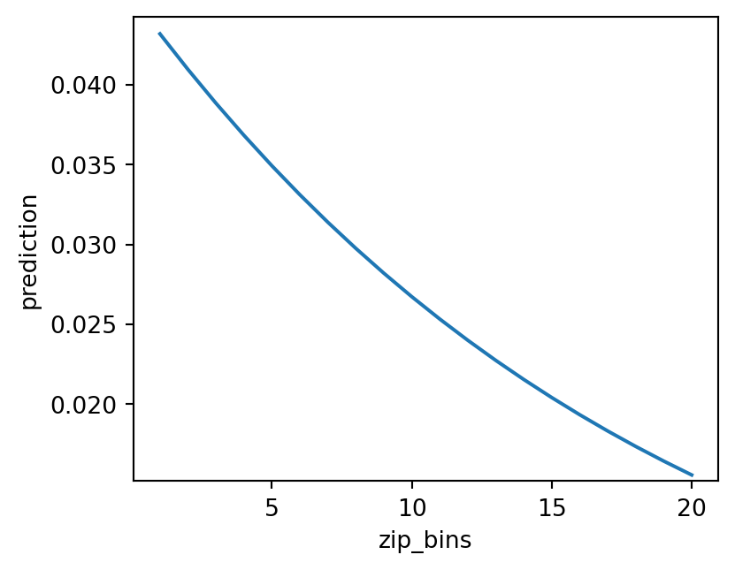
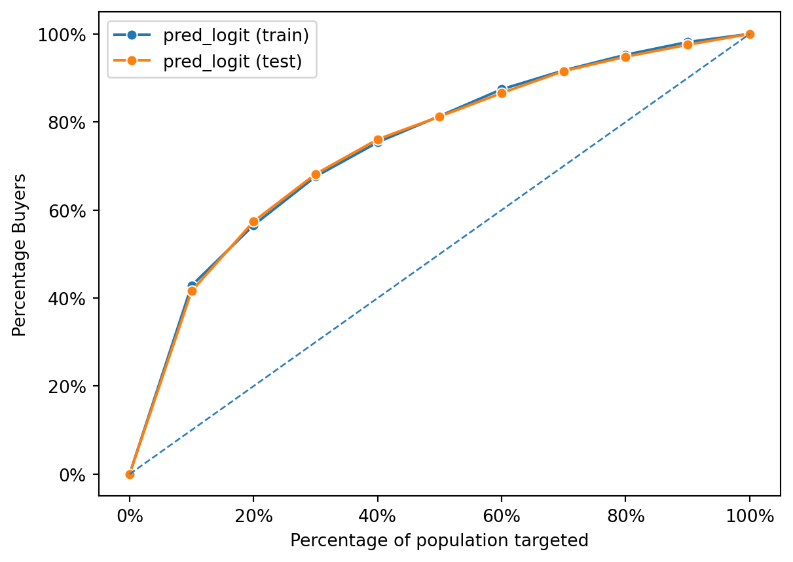
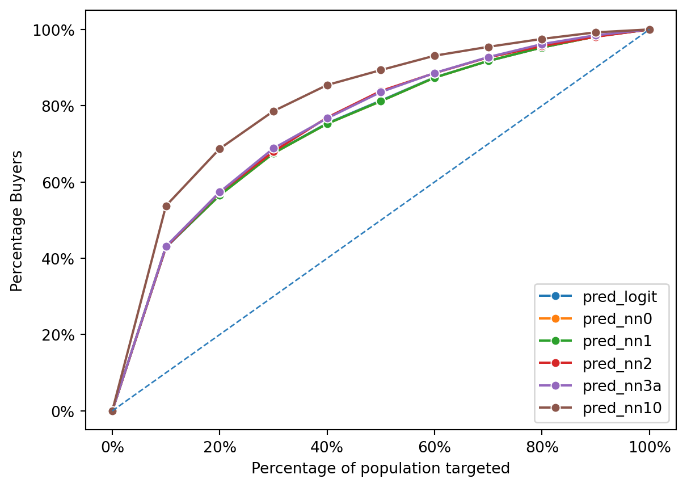
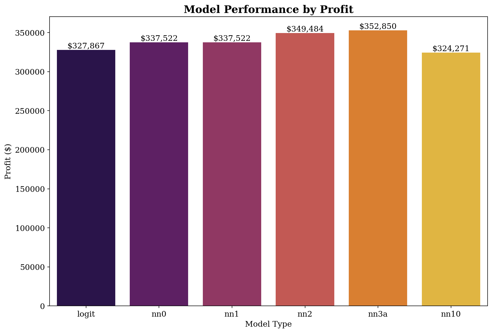

import matplotlib as mpl
import matplotlib.pyplot as plt
import numpy as np
import pandas as pd
import pyrsm as rsm
# increase plot resolution
# mpl.rcParams["figure.dpi"] = 150
rsm.__version__
intuit75k = pd.read_parquet("data/intuit75k.parquet")Intuit Upgrade Notebook
This analytical examines the efficacy of an upsell campaign targeting small businesses to upgrade to the latest QuickBooks software, based on a dataset of 75,000 entities from a pool of 801,821.
Utilizing logistic regression and neural networks, the analysis aims to:
- Understand customer behaviors and preferences towards the software upgrade.
- Identify factors influencing the likelihood of upgrading.
- Enhance targeting strategies for future marketing campaigns to optimize conversion rates and customer satisfaction.
By leveraging logistic regression, we assess the probabilistic impact of variables on customer decisions, while neural networks allow for a deeper dive into complex, non-linear relationships among data points. This dual-model approach provides:
- Insights into direct and subtle factors affecting upgrade decisions.
- Identification of potential customer segments more likely to respond positively.
- A foundation for more effective and efficient marketing strategies, contributing to business growth and customer loyalty.
Data Analysis
Data Description: Intuit Quickbooks upgrade
The purpose of this exercise is to gain experience modeling the response to an upsell campaign. The intuit75k.parquet file contains data on 75,000 (small) businesses that were selected randomly from the 801,821 that were sent the wave-1 mailing. The mailing contained an offer to upgrade to the latest version of the Quickbooks software.
Variable res1 denotes which of these businesses responded to the mailing by purchasing Quickbooks version 3.0 from Intuit Direct. Note that Intuit Direct sells products directly to its customers rather than through a retailer. Use the available data to predict which businesses that did not respond to the wave-1 mailing, are most likely to respond to the wave-2 mailing. Note that variables were added, deleted, and recoded so please ignore the variable descriptions in Exhibit 3 in the case in the course reader. Instead, use the variable descriptions below:
Variable description
- id: Small business customer ID
- zip5: 5-Digit ZIP Code (00000=unknown, 99999=international ZIPs).
- zip_bins: Zip-code bins (20 approx. equal sized bins from lowest to highest zip code number)
- sex: Gender Identity “Female”, “Male”, or “Unknown”
- bizflag: Business Flag. Address contains a Business name (1 = yes, 0 = no or unknown).
- numords: Number of orders from Intuit Direct in the previous 36 months
- dollars: Total $ ordered from Intuit Direct in the previous 36 months
- last: Time (in months) since last order from Intuit Direct in previous 36 months
- sincepurch: Time (in months) since original (not upgrade) purchase of Quickbooks
- version1: Is 1 if customer’s current Quickbooks is version 1, 0 if version 2
- owntaxprod: Is 1 if customer purchased tax software, 0 otherwise
- upgraded: Is 1 if customer upgraded from Quickbooks vs. 1 to vs. 2
- res1: Response to wave 1 mailing (“Yes” if responded else “No”)
- training: 70/30 split, 1 for training sample, 0 for validation sample
Data Preprocessing
In the data preprocessing section, we will be reviewing the variables that are present in our dataset and identifying any potential scaling or data pre-processing actions that needs to be made. We will also be reviewing our dataset to ensure tha there are no null values, and that the data types are aligned.
intuit75k.head()| id | zip5 | zip_bins | sex | bizflag | numords | dollars | last | sincepurch | version1 | owntaxprod | upgraded | res1 | training | res1_yes | |
|---|---|---|---|---|---|---|---|---|---|---|---|---|---|---|---|
| 0 | 1 | 94553 | 18 | Male | 0 | 2 | 109.5 | 5 | 12 | 0 | 0 | 0 | No | 1 | 0 |
| 1 | 2 | 53190 | 10 | Unknown | 0 | 1 | 69.5 | 4 | 3 | 0 | 0 | 0 | No | 0 | 0 |
| 2 | 3 | 37091 | 8 | Male | 0 | 4 | 93.0 | 14 | 29 | 0 | 0 | 1 | No | 0 | 0 |
| 3 | 4 | 02125 | 1 | Male | 0 | 1 | 22.0 | 17 | 1 | 0 | 0 | 0 | No | 1 | 0 |
| 4 | 5 | 60201 | 11 | Male | 0 | 1 | 24.5 | 2 | 3 | 0 | 0 | 0 | No | 0 | 0 |
intuit75k.hist(figsize=(20, 20))array([[<Axes: title={'center': 'id'}>,
<Axes: title={'center': 'zip_bins'}>,
<Axes: title={'center': 'bizflag'}>],
[<Axes: title={'center': 'numords'}>,
<Axes: title={'center': 'dollars'}>,
<Axes: title={'center': 'last'}>],
[<Axes: title={'center': 'sincepurch'}>,
<Axes: title={'center': 'version1'}>,
<Axes: title={'center': 'owntaxprod'}>],
[<Axes: title={'center': 'upgraded'}>,
<Axes: title={'center': 'training'}>,
<Axes: title={'center': 'res1_yes'}>]], dtype=object)
Prior to creating any models, we want to review the distribution and scale of the variables in the dataset. If there is scale in the distribution of the variables as exemplified by the histograms produced above, this will effect the ability of our model to accurately and effectively predict the response to our second wave mailing outreach. Based on the distribution of the histograms above, the variable with the greatest skew is the dollars. It skews heavily towards the left, as do the numrods and sincepurch variables. Due to this, we will want to apply some type of transformation to these variables to normalize their distribution.
train_data = intuit75k[intuit75k['training'] == 1]Here we are creating our training set of data. This corresponds to any record that has a 1 in the training column within the Intuit75k database. As per the intuit instructions, the data was already pre-split into 70:30 training:test sets. If the data was not pre-split, we would want to consider employing the StratifyShuffleSplit method to create our training and testing data. This would ensure that our training and test sets have the same number of yes’s, which would provide a more accurate and representative dataset for the training and testing of our model.
intuit75k['res1'].value_counts()res1
No 71399
Yes 3601
Name: count, dtype: int64Correlation Between Features
In addition to scaling the data before we start building our models, we want to identify any potential correlation between the features in our dataset. If any features are highly correlated, this could lead to multi-collinearity within our models and lead to inflation of the variable coefficients or inflated importance of features on our model. If we are able to identify any correlation prior to building our model, we are able to adjust which features are correlated and see how this might increase their importance if a highly-correlated feature is omitted from the model.
corr_columns = ['zip_bins','bizflag','numords','dollars','last','sincepurch']
corr_matrix = train_data[corr_columns].corr()
corr_matrix| zip_bins | bizflag | numords | dollars | last | sincepurch | |
|---|---|---|---|---|---|---|
| zip_bins | 1.000000 | -0.000679 | 0.005397 | 0.006667 | -0.000726 | -0.001555 |
| bizflag | -0.000679 | 1.000000 | -0.000113 | 0.002398 | 0.000647 | -0.003839 |
| numords | 0.005397 | -0.000113 | 1.000000 | 0.587267 | -0.130395 | 0.000284 |
| dollars | 0.006667 | 0.002398 | 0.587267 | 1.000000 | -0.073897 | 0.003649 |
| last | -0.000726 | 0.000647 | -0.130395 | -0.073897 | 1.000000 | -0.001506 |
| sincepurch | -0.001555 | -0.003839 | 0.000284 | 0.003649 | -0.001506 | 1.000000 |
Based on the correlation matrix created above, we see that there is not a high level of correlation between the features of this dataset. A high level of correlation is traditionally considered within the range of 0.7 and 0.9. Correlation coefficients whose magnitude is between 0.5 and 0.7 indicates that variables are moderately correlated. Dollars and numrods have a moderate correlation value of 0.59. It would make sense that these variables have a moderate correlation. The numrod variable represents number of orders from Intuit Direct in the previous 36 months, whereas Dollars represents the total dollar value ordered from intuit direct in the previous 36 months. Traditionally, orders and dollar value tend to have a positive - direct relationship, as we see orders increase, we expect to see dollars increase as well.
Logistic Regression Model
Now that we have transformed the variables to be on the same scale and have identified correlated variables, we can begin building our first logistic regression model. The goal of this model is to predict the probability of a business responding to a mailed offer.
#response rate of the first wave
response_rate = train_data["res1_yes"].mean()
response_rate0.047580952380952383We can find the average response rate to the first wave mailing offer by taking the mean of the res1_yes column across the training dataset. This will be important when we try to project our model’s findings onto the larger client base as a whole. This variable represents whether a business responded to the offer or not. The average response rate in the first wave mailing is 4.76%.
Logistic Regression Model 1
lr = rsm.logistic(
data = {'wave1': train_data},
rvar = "res1_yes",
evar = [
"zip_bins",
"bizflag",
"numords",
"dollars",
"last",
"sincepurch",
"sex",
"version1",
"owntaxprod",
"upgraded"
]
)lr.summary(main = True, vif = True)Logistic regression (GLM)
Data : wave1
Response variable : res1_yes
Level : None
Explanatory variables: zip_bins, bizflag, numords, dollars, last, sincepurch, sex, version1, owntaxprod, upgraded
Null hyp.: There is no effect of x on res1_yes
Alt. hyp.: There is an effect of x on res1_yes
OR OR% coefficient std.error z.value p.value
Intercept 0.052 -94.8% -2.96 0.087 -34.016 < .001 ***
sex[Male] 0.987 -1.3% -0.01 0.052 -0.249 0.804
sex[Unknown] 0.991 -0.9% -0.01 0.074 -0.118 0.906
zip_bins 0.946 -5.4% -0.06 0.004 -14.931 < .001 ***
bizflag 1.047 4.7% 0.05 0.048 0.964 0.335
numords 1.251 25.1% 0.22 0.019 12.010 < .001 ***
dollars 1.001 0.1% 0.00 0.000 3.638 < .001 ***
last 0.958 -4.2% -0.04 0.002 -17.959 < .001 ***
sincepurch 1.002 0.2% 0.00 0.004 0.518 0.605
version1 2.082 108.2% 0.73 0.085 8.583 < .001 ***
owntaxprod 1.359 35.9% 0.31 0.101 3.048 0.002 **
upgraded 2.540 154.0% 0.93 0.084 11.076 < .001 ***
Signif. codes: 0 '***' 0.001 '**' 0.01 '*' 0.05 '.' 0.1 ' ' 1
Pseudo R-squared (McFadden): 0.071
Pseudo R-squared (McFadden adjusted): 0.07
Area under the RO Curve (AUC): 0.709
Log-likelihood: -9332.061, AIC: 18688.123, BIC: 18794.545
Chi-squared: 1425.521, df(11), p.value < 0.001
Nr obs: 52,500
Variance inflation factors:
vif Rsq
sincepurch 3.736 0.732
version1 2.972 0.664
upgraded 2.918 0.657
numords 1.558 0.358
dollars 1.527 0.345
owntaxprod 1.027 0.026
last 1.017 0.017
sex 1.000 0.000
bizflag 1.000 0.000
zip_bins 1.000 0.000Logistic Regression Summary Interpretation
Based on the first version of our logistic regression model, there are a couple of important things to note in regards to feature selection and overall performance of the model. First, we want to take a look at our Pseudo R-squared (McFadden) and Pseudo R-squared (McFadden Adjusted) values. Based on our output, we see that these values are 0.073 and 0.07, respectively. The Pseudo R-squared values are generally lower than the traditional R-squared in linear regression models and don’t have a fixed range. However, the values for our McFadden and McFadden are still on the lower side. This isn’t automatically a deal-breaker for this model or automatically a reason to throw our model away, but we would want weigh these R-squared values in conjunction with other factors (such as AUC, and Chi-squared) to evaluate the effectiveness and predictive performance of our model.
In addition to the r-squared values, we also want to evaluate the AUC value. AUC indicates a model’s ability to discriminate between a positive and negative class. The AUC value is on a fixed scale, with a base threshold of 0.5. Any value over 0.5 is considered to be a better value, and indicate a better model. Our first logisitic regression model had an AUC of 0.708 which suggests that the model has a good ability to distinguish between the two classes (i.e. responded to the mailing offer or not). We can also use the AIC and BIC values to evaluate our model as well. The AIC and BIC respectively represent the Akaike Information Criterion and the Bayesian Information Criterion. These values also indicate the models’s fit to the data. Generally, the goal is to have a lower AIC and BIC value, and models with lower AIC and BIC values are preferred. Our model has an AIC value of 18688.123, and the BIC value of 18794.545. These values are a bit difficult to represent or evaluate at first, but will become more important when we begin to omit variables and see how these values change. If both the AIC and BIC values become lower when removing a variable, we would consider using the model that produces the lower values.
Finally, the most important value when evaluating a models performance is the Chi-squared value. The Chi-squared value of 1425.521 with 11 degrees of freedom and a p.value < 0.001 suggests that the model as a whole is statistically significant, and at least some of the predictors or features in this model are significantly related to the outcome. Therefore, our first logistic regression model with all of the variables included seems to be a statistically significant model with a decent prediction ability. We would want to consider removing any statistically insignificant variables to see how the model’s performance changes, in hopes of building a more powerful prediction model.
lr.plot("vimp")
Permutation Importance Plot Interpretation
Based on the permutation importance graph above, we can see that the variables of importance are upgraded, last, zip_bins, numrods, version1, owntaxprod, dollars. These variables however, do not contribute to a very large decrease in AUC, but this graph allows us to view the ratio of importance of the variables. Additionally, we can see that the bizflag, sincepurch, and sex variables are not important. Based on their lack of importance via AUC decrease, and their statistical insignificance, as identified by their high p-values in the logistic regression summary, we will consider testing their removal from the model and seeing if the model’s performance changes.
lr.plot("pred")
Prediction Plot Interpretation
Based on the prediction plots above, it looks like gender has very little influence of a prediction value. Similarily bizflag, and since_purch also looks insignificant, and doesn’t seem to contribute much to the prediction value. Therefore, we will want to remove them from this logistic regression model to see if the new logistic regression improves the AUC and r^2 value.
Testing the removal of features from the model
As mentioned above, bizflag, sincepurch, and sex all have low importance and are statistically insignificant to our model, as indicated by their high p-values. We want to test removing them from our model to see if the performance of our model changes. The change in model performance will be interpreted based on how the AUC, BIC, Pseudo R-Squared, and Chi-squared values change in comparison to our baseline model with all of the features included as explanatory variables.
Removing bizflag, sincepurch, and sex together
lr.summary(main = False, test=['sincepurch', 'sex','bizflag'])
Pseudo R-squared (McFadden): 0.071
Pseudo R-squared (McFadden adjusted): 0.07
Area under the RO Curve (AUC): 0.709
Log-likelihood: -9332.061, AIC: 18688.123, BIC: 18794.545
Chi-squared: 1425.521, df(11), p.value < 0.001
Nr obs: 52,500
Model 1: res1_yes ~ zip_bins + numords + dollars + last + version1 + owntaxprod + upgraded
Model 2: res1_yes ~ zip_bins + bizflag + numords + dollars + last + sincepurch + sex + version1 + owntaxprod + upgraded
Pseudo R-squared, Model 1 vs 2: 0.071 vs 0.071
Chi-squared: 1.257 df (4), p.value 0.869Model Interpretation
We first wanted to see the model’s performance when we removed sincepurch, sex, and bizflag together from the model. As identified above, we noticed that these variables had the lowest importance to the model and were statistically insignificant to the baseline logistic regression model. The test function enables us to generate a logistic regression output as if we were generating the models without these variables being included. We are then able to compare the model’s performance with and without them included. As we see, the first output shows our baseline model’s output. We see the same metrics that were identified previously.
The second output shows us the Pseudo R-squared values in the baseline logit model vs. our new model with the variables being removed. As we see via the output, the Pseudo r-squared value does not change in model 1 vs. model 2, this indicates that the overall explanatory power of the models is unchanged despite the removal of the sincepurch,sex, and bizflag variables. However, the chi-squared value and the p.value change significantly, which is critical. The chi-squared value of 1.257 with 4 degrees of freedom and a p-value of 0.869 from comparing Model 1 and Model 2 suggests that the variables removed do not significantly contribute to the model. A high p-value (p > 0.05) indicates that there is no significant loss (or gain) in explanatory power due to these changes.
essentially, the comparison suggests that the removal of bizflag, sincepurch, and sex between Model 1 and Model 2 does not significantly affect the model’s explanatory power or predictive ability. This is indicated by the unchanged Pseudo R-squared values and the non-significant chi-squared test for the comparison. Therefore, if removing variables does not significantly decrease the model’s performance, it might be beneficial to keep the model simpler by excluding them. A simpler model is easier to interpret and may generalize better to new data. We will also want to test the removal of the variables one by one to see if that improves the model’s explanatory power.
Removing sincepurch, and sex
lr.summary(main = False, test = ['sincepurch', 'sex'])
Pseudo R-squared (McFadden): 0.071
Pseudo R-squared (McFadden adjusted): 0.07
Area under the RO Curve (AUC): 0.709
Log-likelihood: -9332.061, AIC: 18688.123, BIC: 18794.545
Chi-squared: 1425.521, df(11), p.value < 0.001
Nr obs: 52,500
Model 1: res1_yes ~ zip_bins + bizflag + numords + dollars + last + version1 + owntaxprod + upgraded
Model 2: res1_yes ~ zip_bins + bizflag + numords + dollars + last + sincepurch + sex + version1 + owntaxprod + upgraded
Pseudo R-squared, Model 1 vs 2: 0.071 vs 0.071
Chi-squared: 0.331 df (3), p.value 0.954Model interpretation
In the previous section, we evaluated the performance of our logistic regression model when we removed the three insignificant variables from our model as interpreted from their individual p-values. In this removal round, we wanted to evalute the performance of our logistic regression model if we considered removing sincepurch and sex. Both models have the same Pseudo R-squared values (0.071), which suggests that the overall explanatory power of the models is unchanged despite the removal or addition of variables. Additionally, The chi-squared value of 0.331 with 3 degrees of freedom and a p-value of 0.954 from comparing Model 1 and Model 2 suggests that the variables removed (or added) do not significantly contribute to the model. A high p-value (p > 0.05) indicates that there is no significant loss (or gain) in explanatory power due to these changes. This indicates that we might want to consider removing them completely from the model as they don’t increase the explanatory power of the model.
Removing sex
lr.summary(main = False, test = ['sex'])
Pseudo R-squared (McFadden): 0.071
Pseudo R-squared (McFadden adjusted): 0.07
Area under the RO Curve (AUC): 0.709
Log-likelihood: -9332.061, AIC: 18688.123, BIC: 18794.545
Chi-squared: 1425.521, df(11), p.value < 0.001
Nr obs: 52,500
Model 1: res1_yes ~ zip_bins + bizflag + numords + dollars + last + sincepurch + version1 + owntaxprod + upgraded
Model 2: res1_yes ~ zip_bins + bizflag + numords + dollars + last + sincepurch + sex + version1 + owntaxprod + upgraded
Pseudo R-squared, Model 1 vs 2: 0.071 vs 0.071
Chi-squared: 0.062 df (2), p.value 0.97Model interpretation
In this removal round, we wanted to evaluate the performance of our logistic regression model if we tested the removal of sex. Both models have the same Pseudo R-squared values (0.071), which suggests that the overall explanatory power of the models is unchanged despite the removal or addition of variables. Additionally, The chi-squared value of 0.062 with 2 degrees of freedom and a p-value of 0.97 from comparing Model 1 and Model 2 suggests that the variables removed (or added) do not significantly contribute to the model. A high p-value (p > 0.05) indicates that there is no significant loss (or gain) in explanatory power due to these changes. This indicates that we might want to consider removing them completely from the model as they don’t increase the explanatory power of the model.
Removing sincepurch
lr.summary(main = False, test=['sincepurch'])
Pseudo R-squared (McFadden): 0.071
Pseudo R-squared (McFadden adjusted): 0.07
Area under the RO Curve (AUC): 0.709
Log-likelihood: -9332.061, AIC: 18688.123, BIC: 18794.545
Chi-squared: 1425.521, df(11), p.value < 0.001
Nr obs: 52,500
Model 1: res1_yes ~ zip_bins + bizflag + numords + dollars + last + sex + version1 + owntaxprod + upgraded
Model 2: res1_yes ~ zip_bins + bizflag + numords + dollars + last + sincepurch + sex + version1 + owntaxprod + upgraded
Pseudo R-squared, Model 1 vs 2: 0.071 vs 0.071
Chi-squared: 0.268 df (1), p.value 0.605Model interpretation
In this removal round, we wanted to evaluate the performance of our logistic regression model if we tested the removal of sincepurch. Both models have the same Pseudo R-squared values (0.071), which suggests that the overall explanatory power of the models is unchanged despite the removal or addition of variables. Additionally, The chi-squared value of 0.268 with 1 degrees of freedom and a p-value of 0.605 from comparing Model 1 and Model 2 suggests that the variables removed (or added) do not significantly contribute to the model. A high p-value (p > 0.05) indicates that there is no significant loss (or gain) in explanatory power due to these changes. This indicates that we might want to consider removing them completely from the model as they don’t increase the explanatory power of the model.
Removing bizflag
lr.summary(main = False, test=['bizflag'])
Pseudo R-squared (McFadden): 0.071
Pseudo R-squared (McFadden adjusted): 0.07
Area under the RO Curve (AUC): 0.709
Log-likelihood: -9332.061, AIC: 18688.123, BIC: 18794.545
Chi-squared: 1425.521, df(11), p.value < 0.001
Nr obs: 52,500
Model 1: res1_yes ~ zip_bins + numords + dollars + last + sincepurch + sex + version1 + owntaxprod + upgraded
Model 2: res1_yes ~ zip_bins + bizflag + numords + dollars + last + sincepurch + sex + version1 + owntaxprod + upgraded
Pseudo R-squared, Model 1 vs 2: 0.071 vs 0.071
Chi-squared: 0.924 df (1), p.value 0.337Model interpretation
In this removal round, we wanted to evaluate the performance of our logistic regression model if we tested the removal of bizflag. Both models have the same Pseudo R-squared values (0.071), which suggests that the overall explanatory power of the models is unchanged despite the removal or addition of variables. Additionally, The chi-squared value of 0.924 with 1 degree of freedom and a p-value of 0.337 from comparing Model 1 and Model 2 suggests that the variables removed (or added) do not significantly contribute to the model. A high p-value (p > 0.05) indicates that there is no significant loss (or gain) in explanatory power due to these changes. This indicates that we might want to consider removing them completely from the model as they don’t increase the explanatory power of the model.
Removing dollars
lr.summary(main = False, test=['dollars'])
Pseudo R-squared (McFadden): 0.071
Pseudo R-squared (McFadden adjusted): 0.07
Area under the RO Curve (AUC): 0.709
Log-likelihood: -9332.061, AIC: 18688.123, BIC: 18794.545
Chi-squared: 1425.521, df(11), p.value < 0.001
Nr obs: 52,500
Model 1: res1_yes ~ zip_bins + bizflag + numords + last + sincepurch + sex + version1 + owntaxprod + upgraded
Model 2: res1_yes ~ zip_bins + bizflag + numords + dollars + last + sincepurch + sex + version1 + owntaxprod + upgraded
Pseudo R-squared, Model 1 vs 2: 0.070 vs 0.071
Chi-squared: 12.732 df (1), p.value < .001Model interpretation
As mentioned previous, Both models have the same Pseudo R-squared values (0.071), suggesting that the overall explanatory power of the models is unchanged despite the removal or addition of variables. Additionally, The chi-squared value of 0.331 with 3 degrees of freedom and a p-value of 0.954 from comparing Model 1 and Model 2 suggests that the variables removed (or added) do not significantly contribute to the model. A high p-value (p > 0.05) indicates that there is no significant loss (or gain) in explanatory power due to these changes. This indicates that we might want to consider removing them completely from the model as they don’t increase the explanatory power of the model.
The comparison between Model 1 and Model 2 with Pseudo R-squared, Model 1 vs 2: 0.070 vs 0.071 and Chi-squared: 12.732 df (1), p.value < .001 shows a minor improvement in the Pseudo R-squared from Model 1 to Model 2, indicating a slightly better fit in Model 2. The chi-squared value being significant (p < .001) for the comparison suggests that the change between models (likely the inclusion of dollars in Model 2) significantly improves the model’s fit to the data.
Removing owntaxprod
lr.summary(main = False, test=['owntaxprod'])
Pseudo R-squared (McFadden): 0.071
Pseudo R-squared (McFadden adjusted): 0.07
Area under the RO Curve (AUC): 0.709
Log-likelihood: -9332.061, AIC: 18688.123, BIC: 18794.545
Chi-squared: 1425.521, df(11), p.value < 0.001
Nr obs: 52,500
Model 1: res1_yes ~ zip_bins + bizflag + numords + dollars + last + sincepurch + sex + version1 + upgraded
Model 2: res1_yes ~ zip_bins + bizflag + numords + dollars + last + sincepurch + sex + version1 + owntaxprod + upgraded
Pseudo R-squared, Model 1 vs 2: 0.071 vs 0.071
Chi-squared: 8.694 df (1), p.value 0.003Model interpretation
Model 1 and Model 2 are logistic regression models predicting the binary outcome res_yes_no using different sets of explanatory variables. The primary difference between the models is the inclusion of owntaxprod in Model 2, which is not present in Model 1. Pseudo R-squared for Model 1 vs. Model 2: 0.071 vs. 0.071. This metric provides a measure of the explanatory power of the models, with values closer to 1 indicating a better fit. The identical Pseudo R-squared values for both models suggest that they have the same explanatory power, meaning the addition of owntaxprod in Model 2 does not improve the model’s ability to explain the variability in the outcome res_yes_no.
Chi-squared: 8.694, df (1), p.value 0.003. This test compares the two models to determine if the addition of the owntaxprod variable in Model 2 significantly improves the model fit compared to Model 1. The chi-squared statistic is used to assess this, with the degrees of freedom (df) typically representing the difference in the number of parameters estimated between the two models. In this case, the df is 1, corresponding to the one additional variable in Model 2. The p-value of 0.003 indicates that the difference in fit between Model 1 and Model 2 is statistically significant at conventional significance levels (e.g., α = 0.05). Therefore, despite the Pseudo R-squared values being identical, the statistical test suggests that owntaxprod provides a significant contribution to predicting the outcome when it is added to the model.
owntaxprod in our model. However, some other factors we would want to consider are:
- Model complexity: Adding more variables can make the model more complex and potentially harder to interpret.
- Practical significance: Evaluate whether the inclusion of owntaxprod has practical significance in addition to its statistical significance.
- Cross-validation: Perform cross-validation to assess the generalizability of the model and avoid overfitting.
Further evaluation: Consider other metrics such as AUC, accuracy, precision, recall, and F1 score for a more comprehensive evaluation of model performance, especially in the context of the specific application or decision-making process the model is intended to support.
Check cross-validation
ct = rsm.basics.cross_tabs({'intuit75k' :train_data}, "zip_bins", "res1")
ct.summary(output = "perc_row")
Cross-tabs
Data : intuit75k
Variables: zip_bins, res1
Null hyp : There is no association between zip_bins and res1
Alt. hyp : There is an association between zip_bins and res1
Row percentages:
res1 Yes No Total
zip_bins
1 21.7% 78.3% 100.0%
2 4.2% 95.8% 100.0%
3 3.37% 96.63% 100.0%
4 4.06% 95.94% 100.0%
5 3.35% 96.65% 100.0%
... ... ... ...
17 3.88% 96.12% 100.0%
18 5.21% 94.79% 100.0%
19 4.14% 95.86% 100.0%
20 3.71% 96.29% 100.0%
Total 4.76% 95.24% 100.0%
[21 rows x 3 columns]
Chi-squared: 1802.53 df(19), p.value < .001
0.0% of cells have expected values below 5
ct = rsm.basics.cross_tabs({'intuit75k' :train_data}, "sex", "res1")
ct.summary(output = "perc_row")
Cross-tabs
Data : intuit75k
Variables: sex, res1
Null hyp : There is no association between sex and res1
Alt. hyp : There is an association between sex and res1
Row percentages:
res1 Yes No Total
sex
Female 4.8% 95.2% 100.0%
Male 4.76% 95.24% 100.0%
Unknown 4.7% 95.3% 100.0%
Total 4.76% 95.24% 100.0%
Chi-squared: 0.1 df(2), p.value 0.95
0.0% of cells have expected values below 5
ct = rsm.basics.cross_tabs({'intuit75k' :train_data}, "bizflag", "res1")
ct.summary(output = "perc_row")
Cross-tabs
Data : intuit75k
Variables: bizflag, res1
Null hyp : There is no association between bizflag and res1
Alt. hyp : There is an association between bizflag and res1
Row percentages:
res1 Yes No Total
bizflag
0 4.71% 95.29% 100.0%
1 4.92% 95.08% 100.0%
Total 4.76% 95.24% 100.0%
Chi-squared: 1.01 df(1), p.value 0.32
0.0% of cells have expected values below 5
ct = rsm.basics.cross_tabs({'intuit75k' :train_data}, "version1", "res1")
ct.summary(output = "perc_row")
Cross-tabs
Data : intuit75k
Variables: version1, res1
Null hyp : There is no association between version1 and res1
Alt. hyp : There is an association between version1 and res1
Row percentages:
res1 Yes No Total
version1
0 4.33% 95.67% 100.0%
1 6.35% 93.65% 100.0%
Total 4.76% 95.24% 100.0%
Chi-squared: 79.91 df(1), p.value < .001
0.0% of cells have expected values below 5
ct = rsm.basics.cross_tabs({'intuit75k' :train_data}, "owntaxprod", "res1")
ct.summary(output = "perc_row")
Cross-tabs
Data : intuit75k
Variables: owntaxprod, res1
Null hyp : There is no association between owntaxprod and res1
Alt. hyp : There is an association between owntaxprod and res1
Row percentages:
res1 Yes No Total
owntaxprod
0 4.66% 95.34% 100.0%
1 8.18% 91.82% 100.0%
Total 4.76% 95.24% 100.0%
Chi-squared: 40.07 df(1), p.value < .001
0.0% of cells have expected values below 5
pd.crosstab(
train_data["version1"],
train_data["upgraded"],
margins = True,
margins_name = "Total"
).map(lambda x: "{:,}".format(x))| upgraded | 0 | 1 | Total |
|---|---|---|---|
| version1 | |||
| 0 | 30,433 | 10,877 | 41,310 |
| 1 | 11,190 | 0 | 11,190 |
| Total | 41,623 | 10,877 | 52,500 |
ct = rsm.basics.cross_tabs({'intuit75k' :train_data}, "upgraded", "res1")
ct.summary(output = "perc_row")
Cross-tabs
Data : intuit75k
Variables: upgraded, res1
Null hyp : There is no association between upgraded and res1
Alt. hyp : There is an association between upgraded and res1
Row percentages:
res1 Yes No Total
upgraded
0 3.99% 96.01% 100.0%
1 7.7% 92.3% 100.0%
Total 4.76% 95.24% 100.0%
Chi-squared: 262.79 df(1), p.value < .001
0.0% of cells have expected values below 5
reg = rsm.model.regress(
data = {"intuit75k": train_data},
rvar = "numords",
evar = 'res1'
)
reg.coef.round(3)| index | coefficient | std.error | t.value | p.value | ||
|---|---|---|---|---|---|---|
| 0 | Intercept | 2.568 | 0.025 | 103.967 | 0.0 | *** |
| 1 | res1[T.No] | -0.523 | 0.025 | -20.643 | 0.0 | *** |
reg = rsm.model.regress(
data = {"intuit75k": train_data},
rvar = "dollars",
evar = 'res1'
)
reg.coef.round(3)| index | coefficient | std.error | t.value | p.value | ||
|---|---|---|---|---|---|---|
| 0 | Intercept | 117.000 | 1.615 | 72.448 | 0.0 | *** |
| 1 | res1[T.No] | -25.533 | 1.655 | -15.430 | 0.0 | *** |
reg = rsm.model.regress(
data = {"intuit75k": train_data},
rvar = "last",
evar = 'res1'
)
reg.coef.round(3)| index | coefficient | std.error | t.value | p.value | ||
|---|---|---|---|---|---|---|
| 0 | Intercept | 12.022 | 0.190 | 63.192 | 0.0 | *** |
| 1 | res1[T.No] | 4.026 | 0.195 | 20.653 | 0.0 | *** |
reg = rsm.model.regress(
data = {"intuit75k": train_data},
rvar = "sincepurch",
evar = 'res1'
)
reg.coef.round(3)| index | coefficient | std.error | t.value | p.value | ||
|---|---|---|---|---|---|---|
| 0 | Intercept | 19.153 | 0.200 | 95.793 | 0.0 | *** |
| 1 | res1[T.No] | -3.712 | 0.205 | -18.121 | 0.0 | *** |
Check the zip_bins
fig = rsm.prop_plot(train_data, "zip_bins", "res1", "Yes")
intuit75k['zip_bins'] = intuit75k['zip_bins'].astype('category')
lr = rsm.logistic(
data = {'intuit75k': train_data},
rvar = "res1_yes",
evar = [
"zip_bins",
"bizflag",
"numords",
"dollars",
"last",
"sincepurch",
"sex",
"version1",
"owntaxprod",
"upgraded"
]
)
lr.coef.round(3)| index | OR | OR% | coefficient | std.error | z.value | p.value | ||
|---|---|---|---|---|---|---|---|---|
| 0 | Intercept | 0.052 | -94.814 | -2.959 | 0.087 | -34.016 | 0.000 | *** |
| 1 | sex[T.Male] | 0.987 | -1.286 | -0.013 | 0.052 | -0.249 | 0.804 | |
| 2 | sex[T.Unknown] | 0.991 | -0.870 | -0.009 | 0.074 | -0.118 | 0.906 | |
| 3 | zip_bins | 0.946 | -5.376 | -0.055 | 0.004 | -14.931 | 0.000 | *** |
| 4 | bizflag | 1.047 | 4.743 | 0.046 | 0.048 | 0.964 | 0.335 | |
| 5 | numords | 1.251 | 25.150 | 0.224 | 0.019 | 12.010 | 0.000 | *** |
| 6 | dollars | 1.001 | 0.097 | 0.001 | 0.000 | 3.638 | 0.000 | *** |
| 7 | last | 0.958 | -4.172 | -0.043 | 0.002 | -17.959 | 0.000 | *** |
| 8 | sincepurch | 1.002 | 0.203 | 0.002 | 0.004 | 0.518 | 0.605 | |
| 9 | version1 | 2.082 | 108.170 | 0.733 | 0.085 | 8.583 | 0.000 | *** |
| 10 | owntaxprod | 1.359 | 35.945 | 0.307 | 0.101 | 3.048 | 0.002 | ** |
| 11 | upgraded | 2.540 | 154.028 | 0.932 | 0.084 | 11.076 | 0.000 | *** |
lr.plot("pred", incl = "zip_bins")
(
intuit75k.query("(training == 1) & (zip_bins == 1)")
.groupby("zip5")['res1_yes']
.agg(["mean", "sum", "count"])
.sort_values(by = "sum", ascending = False)[0:10]
.assign(mean = lambda x: x["mean"].apply(lambda y: f"{100 * y:.2f}%"))
)| mean | sum | count | |
|---|---|---|---|
| zip5 | |||
| 00801 | 41.12% | 486 | 1182 |
| 00804 | 35.43% | 45 | 127 |
| 00000 | 3.00% | 3 | 100 |
| 01923 | 37.50% | 3 | 8 |
| 01890 | 17.65% | 3 | 17 |
| 02050 | 28.57% | 2 | 7 |
| 01950 | 50.00% | 2 | 4 |
| 01752 | 13.33% | 2 | 15 |
| 01754 | 40.00% | 2 | 5 |
| 01863 | 22.22% | 2 | 9 |
Improve the model by adding dummies for zip 00801 and 00804
intuit75k = intuit75k.assign(
zip801 = rsm.ifelse(intuit75k["zip5"] == "00801", 1, 0),
zip804 = rsm.ifelse(intuit75k["zip5"] == "00804", 1, 0),
)lr = rsm.model.logistic(
data = {"intuit75k": intuit75k.query("training == 1")},
rvar = "res1",
lev = "Yes",
evar = [
'zip_bins',
'sex',
'numords',
'bizflag',
'dollars',
'last',
'owntaxprod',
'sincepurch',
'version1',
'upgraded',
'zip801',
'zip804'
]
)
lr.coef[30:].round(3)| index | OR | OR% | coefficient | std.error | z.value | p.value | ||
|---|---|---|---|---|---|---|---|---|
| 30 | zip801 | 25.333 | 2433.301 | 3.232 | 0.164 | 19.746 | 0.0 | *** |
| 31 | zip804 | 18.398 | 1739.833 | 2.912 | 0.249 | 11.709 | 0.0 | *** |
lr.summary(main = False, fit = False, test = "zip_bins")
Model 1: res1 ~ sex + numords + bizflag + dollars + last + owntaxprod + sincepurch + version1 + upgraded + zip801 + zip804
Model 2: res1 ~ zip_bins + sex + numords + bizflag + dollars + last + owntaxprod + sincepurch + version1 + upgraded + zip801 + zip804
Pseudo R-squared, Model 1 vs 2: 0.146 vs 0.148
Chi-squared: 30.796 df (19), p.value 0.042intuit75k["pred_logit"] = lr.predict(intuit75k)["prediction"]dct = {"train": intuit75k[intuit75k.training == 1], "test": intuit75k[intuit75k.training == 0]}
fig = rsm.gains_plot(dct, "res1", "Yes", "pred_logit")
Accuracy of Logistic Regression Model
def accuracy(data, actual, predicted):
TP = FP = TN = FN = 0
for i, j in zip(actual, predicted):
if i == 1 and j == 1:
TP += 1
elif i == 0 and j == 1:
FP += 1
elif i == 0 and j == 0:
TN += 1
elif i == 1 and j == 0:
FN += 1
else:
pass
return (TN + TP) / (TN + TP + FN + FP)Neural Network Model
Based on the output of the logistic regression models, we believe that employing a neural network model, that can account for underlying variable interactions, might be a better predictor than the logistic regression model. We first started by creating a simple neural network(NN) model that has 1 hidden layer with 1 node.


Evaluating Neural Network Performance from Gains Chart
intuit75k.head()| id | zip5 | zip_bins | sex | bizflag | numords | dollars | last | sincepurch | version1 | ... | training | res1_yes | zip801 | zip804 | pred_logit | pred_nn0 | pred_nn1 | pred_nn2 | pred_nn3a | pred_nn10 | |
|---|---|---|---|---|---|---|---|---|---|---|---|---|---|---|---|---|---|---|---|---|---|
| 0 | 1 | 94553 | 18 | Male | 0 | 2 | 109.5 | 5 | 12 | 0 | ... | 1 | 0 | 0 | 0 | 0.044161 | 0.039253 | 0.039253 | 0.046232 | 0.043931 | 0.040564 |
| 1 | 2 | 53190 | 10 | Unknown | 0 | 1 | 69.5 | 4 | 3 | 0 | ... | 0 | 0 | 0 | 0 | 0.022178 | 0.020067 | 0.020067 | 0.029727 | 0.027086 | 0.018918 |
| 2 | 3 | 37091 | 8 | Male | 0 | 4 | 93.0 | 14 | 29 | 0 | ... | 0 | 0 | 0 | 0 | 0.091385 | 0.094208 | 0.094208 | 0.075088 | 0.073340 | 0.151937 |
| 3 | 4 | 02125 | 1 | Male | 0 | 1 | 22.0 | 17 | 1 | 0 | ... | 1 | 0 | 0 | 0 | 0.011381 | 0.011572 | 0.011572 | 0.012489 | 0.008148 | 0.022096 |
| 4 | 5 | 60201 | 11 | Male | 0 | 1 | 24.5 | 2 | 3 | 0 | ... | 0 | 0 | 0 | 0 | 0.025147 | 0.024115 | 0.024115 | 0.021093 | 0.024610 | 0.009841 |
5 rows × 23 columns
fig = rsm.gains_plot(intuit75k[intuit75k.training == 1],
"res1", "Yes",
["pred_logit", "pred_nn0","pred_nn1", "pred_nn2", "pred_nn3a", "pred_nn10"])
The gains chart provided compares the performance of three predictive models: a logistic regression model (pred_logit) and two neural network models (pred_nn1 and pred_nn2). The chart plots the percentage of positive outcomes (buyers) captured against the percentage of the population targeted based on the model’s predictions.
All models perform above the diagonal line, which represents random chance; this indicates that each model has predictive power beyond mere guessing. The chart shows that the logistic regression and the first neural network model (pred_nn1) have similar performance, capturing nearly the same percentage of buyers across the population targeted. The second neural network model (pred_nn2) appears to perform slightly better, capturing a marginally higher percentage of buyers for most of the population percentages targeted. This suggests that pred_nn2 may have a more nuanced understanding of the data, possibly due to a more complex model structure, and is able to more accurately identify potential buyers.
However, the differences between the models are not drastic, which implies that the complexity added in the neural network models may not be translating into significantly better performance over the logistic regression in this case. The closeness of their performances also suggests that the relationships within the data might be captured almost as effectively by the simpler logistic regression model as by the more complex neural network models.
dct = {"train": intuit75k[intuit75k.training == 1], "test": intuit75k[intuit75k.training == 0]}
fig = rsm.gains_plot(dct, "res1", "Yes", ["pred_logit"])
Both the training and test curves lie above the diagonal, indicating that the logistic regression model has learned to identify buyers more effectively than random chance. The closeness of the two lines suggests that the model generalizes well; it performs similarly on both the training data (seen data) and the test data (unseen data). This is indicative of a good model fit without overfitting, as overfitting would typically be revealed by a high performance on the training data but a significantly lower performance on the test data.
The chart shows that as you target more of the population based on the model’s predictions, you capture a higher percentage of buyers. Both lines show a relatively steady and linear increase, suggesting that the model ranks potential buyers effectively across the entire dataset. There’s no sharp increase at the beginning, which would suggest that there’s a subset of the population with a significantly higher likelihood of buying. Instead, the model’s predictions are spread out across the population, capturing buyers at a fairly uniform rate as more of the population is targeted.
fig = rsm.gains_plot(dct, "res1", "Yes", "pred_nn0")
fig = rsm.gains_plot(dct, "res1", "Yes", "pred_nn1")
fig = rsm.gains_plot(dct, "res1", "Yes", "pred_nn2")
This gains chart displays the performance of the second neural network model (pred_nn2) on both the training and test datasets. The chart demonstrates that the model is effective at identifying buyers, as indicated by the curves lying well above the diagonal line representing random selection.
The performance on the training data is very close to the performance on the test data, which suggests that the model generalizes well and is not overfitting. Overfitting would be indicated by a high performance on the training data but significantly worse performance on the test data. The fact that both curves are almost superimposed on each other indicates that the patterns the model has learned from the training data are applicable to the unseen test data.
Additionally, the curves are steeper at the beginning, which means that targeting a smaller percentage of the population based on the model’s predictions can capture a larger percentage of buyers. This is a desirable trait in a model used for prioritizing which segments of a population to target for marketing or intervention efforts. The model seems to rank potential buyers effectively, identifying those most likely to purchase early on as the population is targeted incrementally. This can be particularly valuable in applications where it is cost-effective to target only a subset of the entire population.
Model Tuning
from sklearn.model_selection import GridSearchCV
hls = [(1,), (2,), (3,), (3, 3), (4, 2), (5, 5)]
param_grid = {"hidden_layer_sizes": hls}
scoring = {"AUC": "roc_auc"}
clf_cv = GridSearchCV(
clf0.fitted, param_grid, scoring=scoring, cv=5, n_jobs=4, refit="AUC", verbose=5
)
clf0.data_onehot.mean().round(3)
clf0.data.res1_yes
clf_cv.fit(clf0.data_onehot, clf0.data.res1_yes)Fitting 5 folds for each of 6 candidates, totalling 30 fitsGridSearchCV(cv=5,
estimator=MLPClassifier(activation='tanh', hidden_layer_sizes=(1,),
max_iter=10000, random_state=1234,
solver='lbfgs'),
n_jobs=4,
param_grid={'hidden_layer_sizes': [(1,), (2,), (3,), (3, 3),
(4, 2), (5, 5)]},
refit='AUC', scoring={'AUC': 'roc_auc'}, verbose=5)In a Jupyter environment, please rerun this cell to show the HTML representation or trust the notebook. On GitHub, the HTML representation is unable to render, please try loading this page with nbviewer.org.
GridSearchCV(cv=5,
estimator=MLPClassifier(activation='tanh', hidden_layer_sizes=(1,),
max_iter=10000, random_state=1234,
solver='lbfgs'),
n_jobs=4,
param_grid={'hidden_layer_sizes': [(1,), (2,), (3,), (3, 3),
(4, 2), (5, 5)]},
refit='AUC', scoring={'AUC': 'roc_auc'}, verbose=5)MLPClassifier(activation='tanh', hidden_layer_sizes=(1,), max_iter=10000,
random_state=1234, solver='lbfgs')MLPClassifier(activation='tanh', hidden_layer_sizes=(1,), max_iter=10000,
random_state=1234, solver='lbfgs')pd.DataFrame(clf_cv.cv_results_).iloc[:, 5:].sort_values("rank_test_AUC")| params | split0_test_AUC | split1_test_AUC | split2_test_AUC | split3_test_AUC | split4_test_AUC | mean_test_AUC | std_test_AUC | rank_test_AUC | |
|---|---|---|---|---|---|---|---|---|---|
| 1 | {'hidden_layer_sizes': (2,)} | 0.758255 | 0.770282 | 0.782662 | 0.765579 | 0.773062 | 0.769968 | 0.008090 | 1 |
| 2 | {'hidden_layer_sizes': (3,)} | 0.754724 | 0.764858 | 0.778597 | 0.761457 | 0.774358 | 0.766799 | 0.008654 | 2 |
| 3 | {'hidden_layer_sizes': (3, 3)} | 0.742551 | 0.755067 | 0.780358 | 0.769203 | 0.773344 | 0.764104 | 0.013578 | 3 |
| 0 | {'hidden_layer_sizes': (1,)} | 0.748561 | 0.756562 | 0.773532 | 0.763431 | 0.777387 | 0.763895 | 0.010621 | 4 |
| 4 | {'hidden_layer_sizes': (4, 2)} | 0.735937 | 0.756075 | 0.769769 | 0.757250 | 0.745491 | 0.752904 | 0.011456 | 5 |
| 5 | {'hidden_layer_sizes': (5, 5)} | 0.718748 | 0.740427 | 0.741733 | 0.735261 | 0.751256 | 0.737485 | 0.010699 | 6 |
clf_cv.best_params_{'hidden_layer_sizes': (2,)}
Calculating the Accuracy of the models
def classification(actual, predicted):
TP = FP = TN = FN = 0
for i, j in zip(actual, predicted):
if i == 1 and j == 1:
TP += 1
elif i == 0 and j == 1:
FP += 1
elif i == 0 and j == 0:
TN += 1
elif i == 1 and j == 0:
FN += 1
metrics = {
"Accuracy": (TN + TP) / (TN + TP + FN + FP) if (TN + TP + FN + FP) else 0,
"Precision": TP / (TP + FP) if (TP + FP) else 0,
"Recall": TP / (TP + FN) if (TP + FN) else 0
}
return metrics
def prediction_metrics(data, models, predictions, break_even):
results = []
for model, prediction in zip(models, predictions):
data['prediction'] = [1 if i > break_even else 0 for i in data[prediction]]
actual = data['res1_yes']
predicted = data['prediction']
metrics = classification(actual, predicted)
metrics['Model'] = model # Add model name to metrics
results.append(metrics)
column_order = ['Model', 'Accuracy', 'Precision', 'Recall']
results_df = pd.DataFrame(results, columns=column_order)
return results_df# Find break even
cost = 1.41
margin = 60
break_even = cost / margin
break_even0.0235test_data = intuit75k[intuit75k.training == 0]
true_response = test_data['res1_yes']
# Run the function accross all models and predictions
models = ["logit", "nn0", "nn1", "nn2", "nn3a", "nn10"]
predictions = [
"pred_logit",
"pred_nn0",
"pred_nn1",
"pred_nn2",
"pred_nn3a",
"pred_nn10",
"pred_logit_int",
]pred_metrics = prediction_metrics(test_data, models,predictions, break_even)
pred_metrics/var/folders/28/cfl1_cfs3bb536qkz8wkys_w0000gn/T/ipykernel_5280/1757352677.py:22: SettingWithCopyWarning:
A value is trying to be set on a copy of a slice from a DataFrame.
Try using .loc[row_indexer,col_indexer] = value instead
See the caveats in the documentation: https://pandas.pydata.org/pandas-docs/stable/user_guide/indexing.html#returning-a-view-versus-a-copy
| Model | Accuracy | Precision | Recall | |
|---|---|---|---|---|
| 0 | logit | 0.429689 | 0.070272 | 0.869447 |
| 1 | nn0 | 0.460311 | 0.072358 | 0.846782 |
| 2 | nn1 | 0.460311 | 0.072358 | 0.846782 |
| 3 | nn2 | 0.475822 | 0.074030 | 0.842248 |
| 4 | nn3a | 0.465156 | 0.073707 | 0.856754 |
| 5 | nn10 | 0.574844 | 0.078410 | 0.713509 |
Calculate the profit of each model
Note that in wave 2, every response probability is only 50%
for prediction in predictions:
test_data[f'mailto_wave2_{prediction}'] = test_data[prediction] > break_even
def calculate_performance(dat, models, predictions, perf = "res1_yes", break_even = break_even, lev=1):
results = []
for model, prediction in zip(models, predictions):
# Use the boolean column indicating if prediction is above break_even
boolean_column = f'mailto_wave2_{prediction}'
mail_to_rate = len(dat[dat[boolean_column]]) / len(dat)
response_rate = (len(dat[(dat[boolean_column]) & (dat[perf] == lev)]) / len(dat[dat[boolean_column]]))/2 if len(dat[dat[boolean_column]]) else 0
nr_mail = 763334 * mail_to_rate
mail_cost = 1.4 * nr_mail
revenue = 60 * nr_mail * response_rate
expected_profit = revenue - mail_cost
expected_ROME = expected_profit / mail_cost if mail_cost else 0
results.append({
"model": model,
"profit": expected_profit,
"ROME": expected_ROME,
"mail_to_rate": mail_to_rate,
"response_rate": response_rate
})
return pd.DataFrame(results)
performance_data = calculate_performance(test_data, models, predictions, perf = "res1_yes", break_even = break_even, lev=1)
performance_data/var/folders/28/cfl1_cfs3bb536qkz8wkys_w0000gn/T/ipykernel_5280/1120089769.py:2: SettingWithCopyWarning:
A value is trying to be set on a copy of a slice from a DataFrame.
Try using .loc[row_indexer,col_indexer] = value instead
See the caveats in the documentation: https://pandas.pydata.org/pandas-docs/stable/user_guide/indexing.html#returning-a-view-versus-a-copy
/var/folders/28/cfl1_cfs3bb536qkz8wkys_w0000gn/T/ipykernel_5280/1120089769.py:2: SettingWithCopyWarning:
A value is trying to be set on a copy of a slice from a DataFrame.
Try using .loc[row_indexer,col_indexer] = value instead
See the caveats in the documentation: https://pandas.pydata.org/pandas-docs/stable/user_guide/indexing.html#returning-a-view-versus-a-copy
/var/folders/28/cfl1_cfs3bb536qkz8wkys_w0000gn/T/ipykernel_5280/1120089769.py:2: SettingWithCopyWarning:
A value is trying to be set on a copy of a slice from a DataFrame.
Try using .loc[row_indexer,col_indexer] = value instead
See the caveats in the documentation: https://pandas.pydata.org/pandas-docs/stable/user_guide/indexing.html#returning-a-view-versus-a-copy
/var/folders/28/cfl1_cfs3bb536qkz8wkys_w0000gn/T/ipykernel_5280/1120089769.py:2: SettingWithCopyWarning:
A value is trying to be set on a copy of a slice from a DataFrame.
Try using .loc[row_indexer,col_indexer] = value instead
See the caveats in the documentation: https://pandas.pydata.org/pandas-docs/stable/user_guide/indexing.html#returning-a-view-versus-a-copy
/var/folders/28/cfl1_cfs3bb536qkz8wkys_w0000gn/T/ipykernel_5280/1120089769.py:2: SettingWithCopyWarning:
A value is trying to be set on a copy of a slice from a DataFrame.
Try using .loc[row_indexer,col_indexer] = value instead
See the caveats in the documentation: https://pandas.pydata.org/pandas-docs/stable/user_guide/indexing.html#returning-a-view-versus-a-copy
/var/folders/28/cfl1_cfs3bb536qkz8wkys_w0000gn/T/ipykernel_5280/1120089769.py:2: SettingWithCopyWarning:
A value is trying to be set on a copy of a slice from a DataFrame.
Try using .loc[row_indexer,col_indexer] = value instead
See the caveats in the documentation: https://pandas.pydata.org/pandas-docs/stable/user_guide/indexing.html#returning-a-view-versus-a-copy
/var/folders/28/cfl1_cfs3bb536qkz8wkys_w0000gn/T/ipykernel_5280/1120089769.py:2: SettingWithCopyWarning:
A value is trying to be set on a copy of a slice from a DataFrame.
Try using .loc[row_indexer,col_indexer] = value instead
See the caveats in the documentation: https://pandas.pydata.org/pandas-docs/stable/user_guide/indexing.html#returning-a-view-versus-a-copy
| model | profit | ROME | mail_to_rate | response_rate | |
|---|---|---|---|---|---|
| 0 | logit | 327867.219680 | 0.505825 | 0.606533 | 0.035136 |
| 1 | nn0 | 337522.546631 | 0.550533 | 0.573689 | 0.036179 |
| 2 | nn1 | 337522.546631 | 0.550533 | 0.573689 | 0.036179 |
| 3 | nn2 | 349484.838560 | 0.586353 | 0.557733 | 0.037015 |
| 4 | nn3a | 352850.293351 | 0.579440 | 0.569822 | 0.036854 |
| 5 | nn10 | 324271.068391 | 0.680212 | 0.446089 | 0.039205 |
Calculate the profit, which is scale to 801821 - 38487 = 763334 businesses
import matplotlib.pyplot as plt
import seaborn as sns
plt.rcParams['font.family'] = 'serif' # e.g., 'Times New Roman', 'Arial', 'Serif'
plt.rcParams['font.size'] = 12
plt.figure(figsize=(12, 8))
plt.clf()
ax = sns.barplot(x="model", y="profit", data=performance_data, palette="inferno")
ax.set(xlabel="Model Type", ylabel="Profit ($)")
ax.set_title('Model Performance by Profit', fontsize=16, fontweight='bold')
for p in ax.patches:
ax.text(p.get_x() + p.get_width() / 2., (p.get_height() - 1), f"${int(p.get_height()):,}",
ha='center', va='bottom', color='black')
plt.show()/var/folders/28/cfl1_cfs3bb536qkz8wkys_w0000gn/T/ipykernel_5280/3822392447.py:8: FutureWarning:
Passing `palette` without assigning `hue` is deprecated and will be removed in v0.14.0. Assign the `x` variable to `hue` and set `legend=False` for the same effect.

plt.rcParams['font.family'] = 'serif' # e.g., 'Times New Roman', 'Arial', 'Serif'
plt.rcParams['font.size'] = 10
plt.figure(figsize=(12, 8))
plt.clf()
ax = sns.barplot(x="model", y="ROME", data=performance_data, palette="inferno")
ax.set(xlabel="Model Type", ylabel="ROME (%)")
ax.set_title('Model Performance by ROME', fontsize=16, fontweight='bold')
for p in ax.patches:
ax.text(p.get_x() + p.get_width() / 2., (p.get_height()), f"{(p.get_height()):.2f}%",
ha='center', va='bottom', color='black')
plt.show()/var/folders/28/cfl1_cfs3bb536qkz8wkys_w0000gn/T/ipykernel_5280/2081715165.py:5: FutureWarning:
Passing `palette` without assigning `hue` is deprecated and will be removed in v0.14.0. Assign the `x` variable to `hue` and set `legend=False` for the same effect.

Based on the results above, the profit of NN3 is highest, this means that the NN3 model is the best model to use in this case.